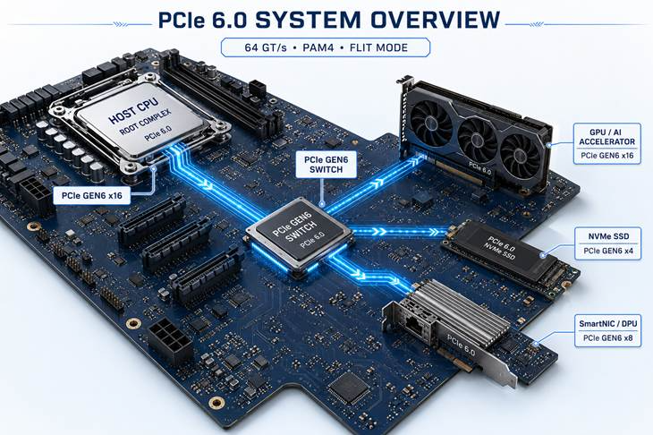
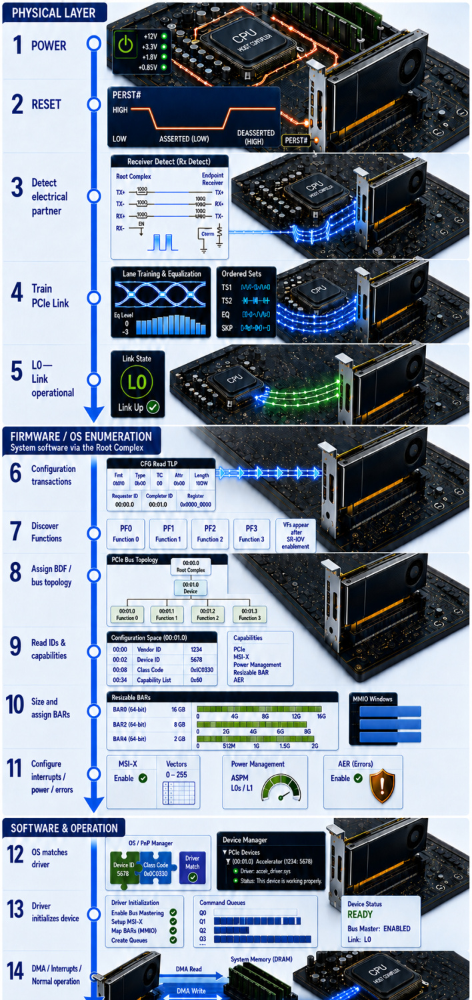

Originally published on LinkedIn. View original article ↗


You install a GPU, NVMe SSD or network adapter. Seconds later, Linux or Windows lists it. Between those two moments, platform hardware, PCIe link logic, firmware, the OS and a device driver execute a carefully ordered hand-off.
POWER / RESET → DETECT → TRAIN → L0 → ENUMERATE → BIND DRIVER → DMA
A device can be electrically present and still be completely invisible to software. This opening article follows the complete path at overview level; later episodes will stop at the most interesting states and transactions.

Stage 1 — Platform and PCIe Link Bring-Up
1. Power
The platform supplies the slot and board power needed by the Root Complex and Endpoint. An add-in card may receive 12 V, 3.3 V and optional auxiliary power; board-level regulators then create lower internal rails. The reference-clock architecture must also be ready for the chosen platform design.
At this point, electrical power exists but no usable PCIe Link exists. Power sequencing is a platform responsibility, not a task performed solely by the PCIe PHY.
2. Release Fundamental Reset
A conventional PCIe add-in card receives PERST#, the active-low sideband signal associated with Fundamental Reset.
a. LOW — reset asserted
b. HIGH — reset de-asserted
During cold power-up, the platform holds PERST# low until the required power and clock conditions are satisfied, then drives it high to release the Endpoint. A HIGH → LOW → HIGH waveform represents a later reset pulse; the essential rule is unchanged: LOW means reset is active.
Embedded and integrated implementations may realize Fundamental Reset through platform-specific controls rather than a card-edge PERST# pin.
3. Detect an Electrical Partner
After reset release, the LTSSM—Link Training and Status State Machine, enters the Detect process. Each transmitter tests whether the far end presents a valid PCIe receiver termination on the candidate lanes.
This is an electrical measurement. TS1/TS2 Ordered Sets, Configuration Requests and normal TLPs are not being exchanged yet. A failed Receiver Detect may indicate an absent or unpowered Endpoint, an open lane, incorrect termination or a board-level signal-integrity problem.
4. Train the PCIe Link
Once receiver termination is detected, both ports exchange TS1 and TS2 Ordered Sets while the LTSSM progresses through states such as Polling and Configuration. Initial Link establishment begins at the 2.5 GT/s signaling rate for compatibility; the Link can later retrain toward a mutually supported higher rate.
Training establishes or confirms:
a. Link and lane numbering
b. Negotiated Link width
c. Lane polarity and lane-reversal handling
d. Lane-to-lane de-skew
e. Supported data rates
f. Equalization behavior for higher data rates
Link training is cooperative. A nominally ×16 design can reach L0 at a reduced width or speed if the available lanes or signal conditions do not support the intended configuration. Therefore, “Link Up” does not by itself prove that expected performance was achieved.
5. Reach L0 — Link Operational
L0 is the normal operational state of the LTSSM. The Physical Layer can now carry PCIe traffic, while Data Link Layer initialization establishes items such as sequence-number state and flow-control credits.
The practical hand-off to software occurs only when the Link is usable and the Data Link Layer is active. Firmware or the OS can then issue Configuration Requests through the Root Complex.
Stage 2 — Firmware and OS Enumeration
Enumeration is a system-software operation. The Root Complex supplies the configuration-access mechanism, and Endpoints respond to requests; neither the PHY nor the Endpoint independently decides the system topology or resource map.
a. BIOS/UEFI commonly performs pre-boot discovery and resource allocation.
b. The OS PCI subsystem discovers or validates the hierarchy and assumes runtime ownership.
c. Hot-plug or rescan events can trigger enumeration after boot.
6. Issue Configuration Transactions
System software accesses PCIe Configuration Space through a host bridge or Root Complex, commonly using an ECAM mapping on modern systems. The Root Complex converts those accesses into Configuration Read and Write TLPs.
a. Type 0 requests target Functions on the addressed bus.
b. Type 1 requests are routed across bridges toward a downstream bus and are converted as the request reaches the target bus.
Enumeration commonly probes the Vendor ID first. A value of 0xFFFF indicates that no Function is present at that location from software’s point of view.
7. Discover Functions
A PCIe Device can implement one or more Functions. Software first probes Function 0 and checks the multifunction indication before probing additional conventional Function numbers. Alternative Routing-ID Interpretation (ARI) can extend the Function-number space when supported and enabled.
Each Function owns its own Configuration Space and represents a separately enumerable logical service. SR-IOV Virtual Functions are different: they do not appear during initial Physical Function discovery. They become visible only after SR-IOV is enabled and the PF exposes the requested VFs.
8. Build the Topology and Establish Routing IDs
Every discovered Function is addressed using a Segment:Bus:Device:Function identity—often shortened to BDF when the Segment is implicit.
Software assigns bus-number ranges to bridges and records the resulting hierarchy. Device and Function values follow from the routing topology and the Functions present; software does not simply write a complete BDF into an Endpoint register.
This routing identity is then used for later Configuration Requests and for the OS device model—for example, 0000:03:00.0 on Linux.
9. Read IDs and Capabilities
Software reads the Configuration Header and capability structures for each Function. Important fields include:
a. Vendor ID, Device ID and Revision ID
b. Class Code, Subclass and Programming Interface
c. Header Type and subsystem IDs
d. BAR definitions
e. Standard and extended capability pointers
The capability chains may advertise PCI Express controls, power management, MSI/MSI-X, AER, Resizable BAR, SR-IOV, ACS, ATS, PRI, PASID and many other features. Discovery tells software that a capability exists; it does not mean the capability is already enabled.
10. Size and Assign BARs
Base Address Registers describe the address windows through which software accesses device registers, queues, memory apertures or onboard memory.
With the traditional mechanism, software disables relevant decoding, writes all ones to a BAR and reads back the implemented mask to determine size and type. It then allocates a non-conflicting, correctly aligned address range and programs the BAR. A 64-bit BAR consumes two adjacent 32-bit BAR locations.
Bridge windows must cover the resources assigned below them. Firmware may establish the initial map; the OS may preserve it or rebalance resources when platform policy allows. Resizable BAR is a separate capability that permits software to select among sizes explicitly advertised by the device.
11. Prepare Interrupt, Power and Error Services
After reading the generic capabilities, firmware and the OS PCI core can establish platform-level policy for interrupt routing, PCIe power management, ASPM, Advanced Error Reporting, access control and resource sizing.
This stage crosses an ownership boundary. Capability discovery occurs during enumeration, but a device driver normally requests and enables the final MSI or MSI-X vectors and completes device-specific power and error configuration after binding.
Stage 3 — Driver Binding and Normal Operation
12. Match the Function to a Driver
Once a Function exists in the OS device model, the operating system searches for a compatible driver. Matching can use Vendor and Device IDs, subsystem IDs, Class Code and driver-specific match data.
Discovery and driver binding are deliberately separate. A Function can be visible in the OS and have resources reserved even when no suitable driver is installed. In that state, the device is present—but not yet useful.
13. Initialize the Device
The selected driver performs device-specific initialization. Depending on the device, it may:
a. Enable the Function and reserve its BAR resources
b. Map MMIO regions
c. Reset device-internal engines and load firmware
d. Configure DMA addressability and IOMMU mappings
e. Allocate descriptor rings or command queues
f. Request MSI or MSI-X vectors
g. Enable Bus Mastering when DMA resources are ready
h. Start the device’s processing engines
Enumeration makes the Function addressable. The driver gives it operational meaning.
14. Begin DMA, Interrupts and Normal Operation
The device can now exchange data with system memory:
a. The driver prepares buffers and descriptors.
b. The OS DMA/IOMMU subsystem supplies DMA addresses that the device is permitted to use.
c. The device issues PCIe Memory Read and Memory Write Requests.
d. The Root Complex routes those requests between the PCIe hierarchy and the host memory system.
The CPU does not copy every payload manually. When work completes, the device can signal MSI or MSI-X. At the PCIe protocol level, that interrupt is delivered as a Memory Write Request to a configured message address—not through a dedicated interrupt wire.
The journey is complete: powered hardware has become an enumerated, driver-controlled PCIe Function capable of moving real data.
Next Article — Why Won't the Link Reach L0?
In the next article, we will freeze the sequence between Receiver Detect and L0 and step inside the LTSSM:
i. How can a transmitter detect a receiver before any packets are exchanged?
ii. What exactly happens in Detect.Quiet and Detect.Active?
iii. Why does Link initialization begin at 2.5 GT/s before attempting higher rates?
iv. What information is carried in TS1 and TS2 Ordered Sets?
v. How are lane numbers, polarity handling and final Link width resolved—and why can ×16 fall back to ×8?
vi. Why can a Link loop through Polling, Configuration and Recovery, and when is the Data Link Layer finally ready for Configuration TLPs?
The device has power. PERST# has been released. Both ports detect an electrical partner.
Yet the Link is still not alive. What must the two ports agree on before either can transmit the first real TLP?